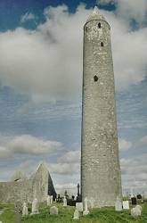

Ireland - About the Country
|  |
| Image: a round tower is a typical symbol of Ireland, built in the monasteries around the 7th century as a fortification agains the raids or the Normans. (© Mathias J. Duckeck) |
Ireland is an island in the northwest of Europe.
The description of the caves of the British Isles on this website is divided into two parts by geographic reasons, disregarding the political situation. So this chapter contains the caves of the island called Ireland, the Republic of Ireland and Northern Ireland.
For the cave of the United Kingdom (excluding Northern Ireland) see: Caves of Great Britain
There are two main reasons why we did this: First, because it is much easier to draw the maps. And second, because it is more useful for foreign visitors. People travelling through ireland have no problems to cross the border, which is actually a green border, but to get to Britain, you must take a ferry. So it seems logical to us, that people will more likely visit caves all over Ireland, than in England and Northern Ireland at the same journey.
Ireland is a green island, with a lot of rain all over the year, and very moderate temperature changes. This climate is influenced very much by the sea, which is never more than 50km away if you are in Ireland. There is normally no frost in winter and snow is rather rare.
The island has mountain ridges, which are not really high, along the coast. The center of the island are flat lowlands, originally big areas of swamp. Today the peat is dug to use it in open fireplaced for heating and cooking. The highest mountains are along the east coast south of the capital Dublin. The mountain ridges at the west coast run east-west and form numerous peninsulas and fjord-like coves.
 SUI - Speleological Union of Ireland
SUI - Speleological Union of Ireland{kind=link}